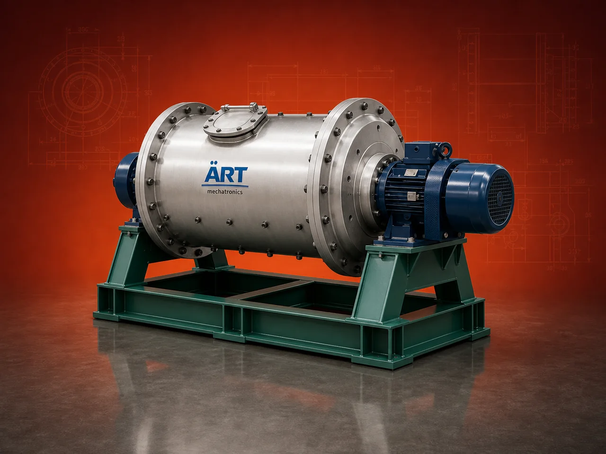

Ball Mill Machine (Industrial Fine Grinding & Powder Processing System)
A Ball Mill Machine, also known as an Industrial Ball Mill or Ball Grinding Mill, is a highly efficient grinding system used for fine pulverization of materials into powder form using steel balls as grinding media.

About the Ball Mill Machine
Ball mills are widely used in industries such as mineral processing, cement manufacturing, chemicals, ceramics, pharmaceuticals, and pigments, where fine and uniform grinding is required.
The system operates on the principle of impact and attrition, delivering consistent particle size, high capacity, and reliable performance in both batch and continuous operations.
ART Mechatronics offers robust and high-performance ball mill machines, engineered for precision grinding, durability, and energy-efficient operation.
One machine, many names
Buyers search for this equipment under many terms — we manufacture all of them:
Working Principle of Ball Mill
Raw material is fed into the rotating drum through:
Inside the mill:
Grinding occurs due to:
Material is reduced to:
Ground material is discharged through:
Types of Ball Mills
Industries Using Ball Mill
🏗️ Mineral Processing Industry
- Limestone
- Ore
- Minerals
🏭 Cement Industry
- Clinker grinding
- Cement production
⚗️ Chemical Industry
- Chemicals
- Pigments
🏺 Ceramic Industry
- Ceramic powders
- Tiles
💊 Pharma Industry
- Fine powders
- Drug formulation
♻️ Recycling Industry
- Powder materials
Features & Advantages
- Fine and uniform grinding
- High production capacity
- Suitable for wet and dry grinding
- Continuous and batch operation options
- Durable and heavy-duty construction
- Energy-efficient performance
- Low maintenance requirement
Technical Highlights
- Capacity: Custom (kg/hr to tons/hr)
- Grinding Type: Impact + Attrition
- Grinding Media: Steel balls / ceramic balls
- Operation: Batch / Continuous
- Construction: Mild Steel / Stainless Steel
- Drive: Electric motor
Turnkey Ball Mill Solutions
ART Mechatronics offers:
- Complete grinding system design
- Ball mill selection based on application
- Integration with feeding and conveying systems
- Installation & commissioning
- After-sales service & AMC
Why Choose Art Mechatronics
- Expertise in industrial grinding systems
- Customized solutions for various industries
- High-performance and durable machines
- Efficient and reliable operation
- Proven performance across applications
Applications
- Mineral Processing Plants
- Cement Plants
- Chemical Processing Units
- Ceramic Manufacturing Units
- Pharma Manufacturing Units
Industries that use the Ball Mill Machine
Related Size Reduction & Grinding machines
Get pricing & specs for the Ball Mill Machine
Share the product, target capacity, current process and plant location. These details help our engineers discuss the right machine or line configuration.
One partner, from design to start-up
ART Mechatronics designs, manufactures, installs and commissions your Ball Mill Machine solution with regional presence in India, UAE and Thailand.